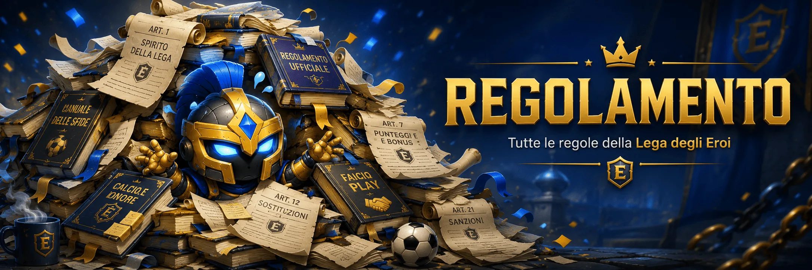

Cari colleghi fantallenatori,
siamo lieti di presentarvi una nuova e coinvolgente modalità di gioco per il fantacalcio: la Lega degli Eroi - Mantra. Il torneo adotta il regolamento Mantra e si ispira alle dinamiche dei fantasy games delle principali leghe sportive professionistiche americane, con una struttura divisa in regular season e playoff.
La lega è composta da 16 squadre, suddivise (solo per la prima parte della stagione) in due conferences da 8 squadre ciascuna:
La composizione delle conferences è stabile nel tempo e rimane invariata ogni anno, salvo eventuali rinunce.
La stagione regolare è composta da 29 giornate, suddivise in due fasi distinte:
In caso di arrivo a pari punti nelle Conference, nel Round Robin o nella classifica totale, il vincitore sarà determinato in base agli scontri diretti.
Le prime 12 classificate della regular season accedono ai playoff, articolati in cinque fasi:
Le prime quattro classificate accedono direttamente ai quarti di finale.
In caso di pareggio, passa la meglio piazzata in regular season. Niente supplementari o rigori (Nessun fattore campo).
Stesse regole: passa la meglio piazzata se pareggio, senza supplementari (Nessun fattore campo).
Andata e ritorno: andata in casa della peggio piazzata, ritorno in casa della meglio piazzata. In caso di parità totale: supplementari e rigori (Fattore campo).
Gara secca in campo neutro. Supplementari e rigori in caso di pareggio (Nessun fattore campo).
Gara secca in campo neutro. Supplementari e rigori in caso di pareggio (Nessun fattore campo).
La Highlander Cup avrà inizio a partire dalla diciassettesima giornata della Regular Season.
La competizione si concluderà con la tradizionale finale a tre squadre, che si disputerà in coincidenza con la ventinovesima e ultima giornata della Regular Season.
La competizione partirà con la terza giornata di Serie A e si articola in due fasi distinte:
La prima fase prevede 5 giornate di scontri diretti per tutte le 16 squadre iscritte alla Lega degli Eroi, senza distinzione iniziale di Conference ai fini della classifica. Tutte le partite si disputano senza fattore campo.
Il calendario di ogni squadra è così strutturato:
Alla fine delle 5 giornate viene stilata una classifica unica della prima fase, che determina gli accoppiamenti della fase successiva. In caso di parità, vale il criterio dei Magic Punti.
Le 8 vincitrici degli ottavi si affrontano nei quarti di finale. Gli accoppiamenti vengono stabiliti in base al piazzamento ottenuto nella prima fase: la 1ª classificata affronta la peggiore squadra ancora in corsa, la 2ª affronta la seconda peggiore e così via.
Le 4 vincitrici dei quarti si affrontano in semifinale. Le due vincenti si sfidano nella finalissima per il titolo.
Il diritto di prima scelta spetta alla Conference che non ha espresso la squadra vincitrice del campionato.
Con l’introduzione della Crash out Cup, i partecipanti alla Supercoppa saranno:
La composizione delle rose avviene tramite Draft, con scelta libera dal listone Mantra, senza applicazione delle quotazioni o fantavalori di mercato.
Ogni squadra dovrà comporre una rosa di 27 calciatori, così suddivisi:
All'interno della rosa restano obbligatori 6 portieri, scelti in due blocchi da 3 portieri, ciascun blocco appartenente a una sola squadra di Serie A.
🟡 Tutti i 27 giocatori, inclusi portieri e Under 21, devono essere selezionati o coperti durante il Draft nei 23 round disponibili. I due blocchi portieri contano come due chiamate complessive.
Prima e durante il Draft sono consentite operazioni di mercato solo tra squadre della stessa Conference.
❌ Divieto Inter-Conference: non è consentito scambiare scelte al Draft, presenti o future, tra squadre di Conference diverse prima del Draft, durante il Draft e nelle prime due finestre di mercato stagionali.
L'ordine del Draft è determinato in base alla classifica finale della Regular Season della stagione precedente.
Il mercato sarà considerato ufficialmente aperto all'inizio del Draft e rimarrà attivo fino alla vigilia della terza giornata di Serie A, nel rispetto delle limitazioni previste per gli scambi Inter-Conference.
Lo status di Restricted Free Agent introduce un meccanismo di protezione dinamica: il manager mantiene un legame con un proprio giocatore chiave, ma il mercato può comunque determinarne il valore reale.
Se una squadra avversaria chiama al Draft un calciatore protetto come RFA, il proprietario originale può esercitare il Diritto di Pareggio.
Qualora un manager designi un giocatore come Restricted Free Agent (RFA) a inizio stagione, ma il giocatore non venga chiamato da nessun altro manager durante il Draft, il manager detentore del cartellino non è obbligato a metterlo sotto contratto né a selezionarlo nelle successive fasi del Draft.
In caso di cessione del calciatore RFA tramite trade durante la stagione o durante il Draft, il venditore può vincolare l'operazione inserendo una clausola di Diritto di Prelazione.
Nota per i Manager: il calciatore RFA diventa un asset strategico di grande valore. Il veto sulla prelazione garantisce che un giocatore chiave non possa finire in mano a un rivale diretto senza il consenso esplicito del titolare della prelazione.
Lo slot Injury Reserve consente di proteggere temporaneamente un calciatore con un infortunio grave, senza perdere immediatamente il controllo dell'asset. È utilizzabile una sola volta per stagione.
Permette di acquistare e cedere calciatori, scelte e asset tra le squadre della Lega, nel rispetto delle finestre di mercato e dei limiti previsti per gli scambi tra Conference diverse.
Mercato chiuso: ultime giornate della regular season e durante i playoff.
Gli scambi di scelte al Draft tra squadre appartenenti a Conference diverse sono consentiti soltanto durante le due finestre di mercato aperte nel Round Robin, cioè Sessione 3 e Sessione 4.
Quando una squadra acquista una o più scelte da una squadra di un'altra Conference, non prende materialmente il posto originario di quella scelta nell'ordine dell'altra Conference.
È possibile inserire clausole di protezione sulle scelte scambiate, purché vengano dichiarate ufficialmente al momento dell'annuncio dello scambio.
| Fase | Priorità |
|---|---|
| Conference | Classifica Conference |
| Round Robin | Classifica generale |
| Playoff | Classifica finale Regular Season |
Chi non ottiene il calciatore richiesto ha diritto a una seconda chiamata compensativa alle 16:00.
Se una squadra abbandona la Lega e viene sostituita da una nuova squadra (subentrante), si applicano queste regole per gli scambi di scelte al Draft già effettuati:
Tuttavia:
I diritti di scelta ottenuti tramite premi sportivi personali, come una scelta bonus derivante dalla vittoria della Supercoppa, non vengono trasferiti automaticamente al nuovo fanta-allenatore subentrante.
Nel caso in cui un calciatore lasci il campionato di Serie A, e venga contrassegnato dal sistema con un asterisco (*), è obbligatorio sostituirlo.
Si distingue tra:
📌 Il giocatore con asterisco non protetto deve obbligatoriamente essere sostituito al primo Waiver Wire disponibile.
Se un giocatore protetto (cioè scelto nei primi 6 round del Draft) lascia la Serie A durante la sessione invernale di calciomercato, il fantallenatore ha diritto a una priorità da utilizzare in uno dei Waiver Wire settimanali prima della chiusura del mercato invernale.
La Lega degli Eroi adotta il regolamento ufficiale Fantacalcio® sistema Mantra, disponibile sul sito Fantacalcio.it, con le seguenti regole e personalizzazioni applicate:
| Evento | Bonus/Malus |
|---|---|
| Gol segnato | +3 |
| Gol decisivo per la vittoria | +1 |
| Gol decisivo per il pareggio | +0.5 |
| Autogol | -2 |
| Gol subito dal portiere | -1 per gol |
| Clean Sheet del portiere (novità) | +1 se porta inviolata |
L’assist viene valutato in base alla qualità del passaggio e al vantaggio fornito al marcatore:
| Tipo di Assist | Descrizione | Bonus |
|---|---|---|
| Low Quality Assist | Vantaggio minimo per il marcatore | +0.5 |
| Medium Quality Assist | Vantaggio decisivo per il marcatore | +1 |
| High Quality Assist | Vantaggio massimo, conclusione semplice e senza opposizione | +1.5 |
La Lega applica il modificatore difesa esteso, basato sulla media voto del pacchetto difensivo.
🔢 Calcolo:
🎁 Bonus per media voto:
| Media Voto Difesa | Bonus |
|---|---|
| ≥ 6.00 e < 6.25 | +1.0 |
| ≥ 6.25 e < 6.5 | +2.0 |
| ≥ 6.5 e < 6.75 | +3.0 |
| ≥ 6.75 e < 7.0 | +4.0 |
| ≥ 7.0 e < 7.25 | +5.0 |
| ≥ 7.25 e < 7.5 | +6.0 |
| ≥ 7.5 | +7.0 |
Lo “Switch” è una funzione che garantisce la titolarità di un calciatore selezionato, anche se non parte titolare nella realtà.
⚙️ Come funziona:
ℹ️ Regole:
Quota di partecipazione: €80
Montepremi totale: €1.200
Quest'anno, dato l'abbandono a campionato iniziato di Lokomotiv Lipsia, Fanatugusta non pagherà la sua quota. Solo in caso di vittoria di un premio, pagherà regolarmente.
| Competizione | Premio |
|---|---|
| Conference Championship | €100 |
| Conference League | €100 |
| Round Robin | €90 |
| Regular Season | €150 |
| Highlander Cup | €120 |
| Crash Out Cup | €110 |
| Supercoppa | €Round 10 dell’anno successivo |
| Posizione | Premio |
|---|---|
| Campione | €300 |
| Secondo posto | €150 |
| Terzo posto | €80 |